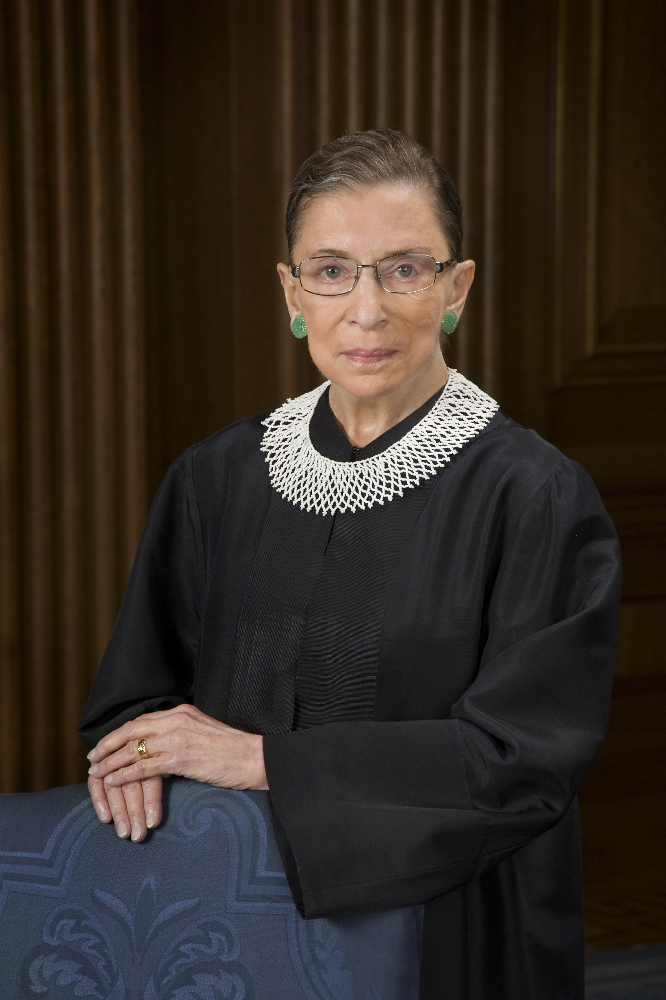
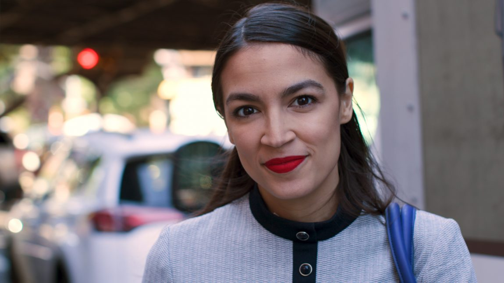
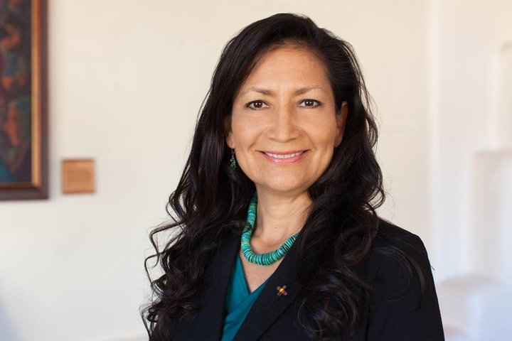
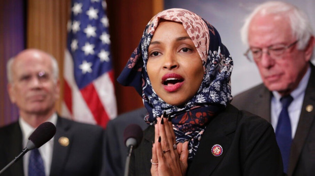
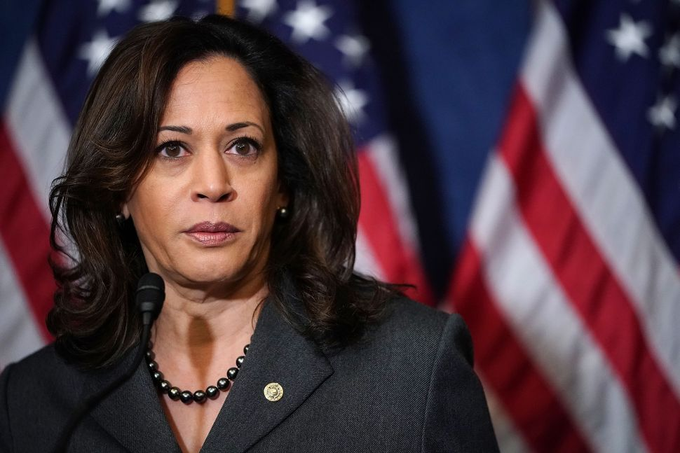

History & Politics
History? More like HERstory ammirite ladies?!?!!
Ruth Bader Ginsburg
Ruth Bader Ginsburg is an Associate Justice of the Supreme Court of the United States. Ginsburg was appointed by President Bill Clinton and took the oath of office on August 10, 1993. She is the second female justice (after Sandra Day O'Connor) of four to be confirmed to the court. She is generally viewed as belonging to the liberal wing of the court. Ginsburg has received attention in American popular culture for her fiery liberal dissents and refusal to step down; she has been dubbed the "Notorious R.B.G."
Ginsburg earned her bachelor's degree at Cornell University, and became a wife and mother before starting law school at Harvard, where she was one of the few women in her class. She transferred to Columbia Law School, where she graduated tied for first in her class.
Ginsburg spent a considerable part of her legal career as an advocate for the advancement of gender equality and women's rights, winning multiple victories arguing before the Supreme Court. She advocated as a volunteer lawyer for the American Civil Liberties Union and was a member of its board of directors and one of its general counsels in the 1970s.
Alexandria Ocasio Cortez
Alexandria Ocasio-Cortez is an American politician and activist. A member of the Democratic Party, she has been the U.S. Representative for New York's 14th congressional district since January 3, 2019. The district includes the eastern part of The Bronx and portions of north-central Queens in New York City.
On June 26, 2018, Ocasio-Cortez won the Democratic Party's primary election for the 14th congressional district, defeating the ten-term incumbent Congressman, Democratic Caucus Chair Joe Crowley, in one of the biggest upset victories in the 2018 midterm election primaries.
Before running for Congress, Ocasio-Cortez served as an educational director for the 2017 Northeast Collegiate World Series for the National Hispanic Institute, and worked as a bartender. At the age of 29, she is the youngest woman ever to serve in the United States Congress.
Debra Haaland
Debra Anne Haaland is an American attorney and politician serving as the U.S. Representative for New Mexico's 1st congressional district. The district includes almost three-fourths of Albuquerque, along with most of that city's suburbs.
She and Sharice Davids are the first two Native American women elected to the U.S. Congress. Haaland is a former chair of the Democratic Party of New Mexico.
Elizabeth Cady Stanton

Elizabeth Cady Stanton was an American suffragist, social activist, abolitionist, and leading figure of the early women's rights movement. Her Declaration of Sentiments, presented at the Seneca Falls Convention held in 1848 in Seneca Falls, New York, is often credited with initiating the first organized women's rights and women's suffrage movements in the United States. Stanton was president of the National Woman Suffrage Association from 1892 until 1900.
Unlike many of those involved in the women's rights movement, Stanton addressed various issues pertaining to women beyond voting rights. Her concerns included women's parental and custody rights, property rights, employment and income rights, divorce, the economic health of the family, and birth control.
Hillary Rodham Clinton

Hillary Rodham Clinton is an American politician, diplomat, lawyer, writer, and public speaker. She served as the First Lady of the United States from 1993 to 2001, U.S. Senator from New York from 2001 to 2009, 67th United States Secretary of State from 2009 to 2013, and as the Democratic Party's nominee for President of the United States in the 2016 election.
Clinton graduated from Wellesley College in 1969 and earned a Juris Doctor from Yale Law School in 1973. After serving as a congressional legal counsel, she moved to Arkansas and married Bill Clinton in 1975. In 1977, she co-founded Arkansas Advocates for Children and Families. She was appointed the first female chair of the Legal Services Corporation in 1978, and became the first female partner at Little Rock's Rose Law Firm the following year. As First Lady of Arkansas, she led a task force whose recommendations helped reform Arkansas's public schools.
As First Lady of the United States, Clinton was an advocate for gender equality and healthcare reform. In 2000, Clinton was elected as the first female Senator from New York, and was reelected to the Senate in 2006. She unsuccessfully ran for President in 2008, losing the Democratic nomination to Barack Obama. She then served as the U.S. Secretary of State in the Obama Administration from 2009 to 2013.
Clinton made a second presidential run in 2016. She received the most votes and primary delegates in the 2016 Democratic primaries, and formally accepted her party's nomination for President of the United States on July 28, 2016. She became the first female candidate to be nominated for president by a major U.S. political party. She lost the presidential election in the Electoral College, despite winning a plurality of the popular vote. She received more than 65 million votes, the 3rd-highest count in a U.S. presidential election, behind Obama's victories in 2008 and 2012.
Ilhan Omar
Ilhan Abdullahi Omar is a Somali American politician serving as the U.S. Representative for Minnesota's 5th congressional district.
In 2016, Omar was elected to the Minnesota House of Representatives, making her the first Somali American elected to legislative office in the United States. On November 6, 2018, she became the first Somali American elected to the United States Congress. Along with Rashida Tlaib, she was one of the first two Muslim women elected to Congress. Omar is also the first woman of color to serve as a U.S. Representative from Minnesota.
Jeannette Rankin

Jeannette Rankin was an American politician and women's rights advocate, and the first woman to hold federal office in the United States. She was elected to the U.S. House of Representatives from Montana in 1916, and again in 1940. She remains the only woman elected to Congress by Montana.
Each of Rankin's Congressional terms coincided with initiation of U.S. military intervention in each of the two world wars. A lifelong pacifist, she was one of 50 House members, along with six Senators, who opposed the war declaration of 1917, and the only member of Congress to vote against declaring war on Japan after the attack on Pearl Harbor in 1941.
A member of the Republican Party during the Progressive Era, Rankin was also instrumental in initiating the legislation that eventually became the 19th Constitutional Amendment, granting unrestricted voting rights to women. In her victory speech, she recognized the power she held as the only woman able to vote in Congress, saying "I am deeply conscious of the responsibility resting upon me". She championed the causes of women's rights and civil rights throughout a career that spanned more than six decades.
Kamala Harris
Kamala Harris is an American attorney and politician serving as the junior United States Senator for California since 2017. A member of the Democratic Party, she previously served as the 32nd Attorney General of California from 2011 to 2017, and as District Attorney of San Francisco from 2004 to 2010.
Born in Oakland, California, Harris is a graduate of Howard University and University of California, Hastings College of the Law. In the 1990s, Harris worked in the San Francisco District Attorney's Office and the City Attorney of San Francisco's office. In 2004, Harris was elected District Attorney of San Francisco.
Harris was narrowly elected as California's Attorney General in 2010 and reelected in 2014 by a wide margin. On November 8, 2016, she defeated Loretta Sanchez in the 2016 Senate election to succeed outgoing Senator Barbara Boxer, becoming California's third female U.S. Senator and the first of either Indian or Jamaican descent.
Lauren Underwood
Lauren Underwood is an American nurse and politician who serves as the U.S. Representative for Illinois's 14th congressional district as a member of the Democratic Party.
Underwood received a degree in nursing from the University of Michigan and two master's degrees from Johns Hopkins University. She started her career as a policy professional in the Obama Administration in 2014 and later worked as a Senior Advisor at the Department of Health and Human Services (HHS).
In 2018, she was elected to the United States House of Representatives. Upon her swearing in, Underwood became the youngest black woman to serve in Congress.
Nancy Pelosi

Nancy Pelosi is an American politician serving as speaker of the United States House of Representatives since January 2019. First elected to Congress in 1987, she is the only female to have served as Speaker, and is the highest-ranking elected woman in United States history. Pelosi is second in the presidential line of succession, immediately after the vice president.
A member of the Democratic Party, Pelosi is currently in her 17th term as a congresswoman, representing California's 12th congressional district (since 2013), which consists of four-fifths of the city and county of San Francisco. She has led House Democrats since 2003 (the first woman to lead a party in Congress), serving as Speaker twice (2007–2011 and 2019–present) and as House Minority Leader twice (2003–2007 and 2011–2019). She has also served as House Minority Whip (2002–2003).
Pelosi was a major opponent of the Iraq War as well as the Bush Administration's 2005 attempt to privatize Social Security. During her first speakership, she was instrumental in the passage of many landmark bills, including the Affordable Care Act, the Dodd–Frank Wall Street Reform and Consumer Protection Act, the Don't Ask, Don't Tell Repeal Act, along with the American Recovery and Reinvestment Act and 2010 Tax Relief Act which served as economic stimulus amidst the Great Recession.
Sharice Davids
Sharice Davids is an American attorney and politician serving as the U.S. Representative for Kansas's 3rd congressional district since 2019. A member of the Democratic Party, she represents a district that includes most of the Kansas side of the Kansas City metropolitan area.
A lawyer educated at the University of Missouri–Kansas City and Cornell Law School, Davids also was a professional mixed martial artist in the 2010s.
Davids, along with Deb Haaland of New Mexico, is the first Native American woman elected to Congress. Davids is also the first openly lesbian and LGBT member of Congress from Kansas.
Shirley Chisholm
Shirley Chisholm was an American politician, educator, and author. In 1968, she became the first black woman elected to the United States Congress, and she represented New York's 12th congressional district for seven terms from 1969 to 1983. In 1972, she became the first black candidate for a major party's nomination for President of the United States, and the first woman to run for the Democratic Party's presidential nomination.
Susan B. Anthony

Susan B. Anthony was an American social reformer and women's rights activist who played a pivotal role in the women's suffrage movement. Born into a Quaker family committed to social equality, she collected anti-slavery petitions at the age of 17. In 1856, she became the New York state agent for the American Anti-Slavery Society.
In 1872, Anthony was arrested for voting in her hometown of Rochester, New York, and convicted in a widely publicized trial. Although she refused to pay the fine, the authorities declined to take further action. In 1878, Anthony and Elizabeth Cady Stanton arranged for Congress to be presented with an amendment giving women the right to vote. Introduced by Sen. Aaron A. Sargent (R-CA), it later became known colloquially as the Susan B. Anthony Amendment. It was ratified as the Nineteenth Amendment to the U.S. Constitution in 1920.
Gloria Steinem

Gloria Steinem is an American feminist, journalist, and social political activist who became nationally recognized as a leader and a spokeswoman for the American feminist movement in the late 1960s and early 1970s.
Steinem was a columnist for New York magazine, and a co-founder of Ms. magazine. In 1969, Steinem published an article, "After Black Power, Women's Liberation", which brought her to national fame as a feminist leader.
In 2005, Steinem, Jane Fonda, and Robin Morgan co-founded the Women's Media Center, an organization that works "to make women visible and powerful in the media".
Michelle Obama

Michelle Obama is an American writer, lawyer, and university administrator who served as the First Lady of the United States from 2009 to 2017. She is married to the 44th U.S. President, Barack Obama, and was the first African-American First Lady. Obama is a graduate of Princeton University and Harvard Law School. In her early legal career, she worked at the law firm Sidley Austin, where she met Barack Obama. Michelle married Barack in 1992 and they have two daughters.
As First Lady, Obama served as a role model for women, and worked as an advocate for poverty awareness, education, nutrition, physical activity and healthy eating. She supported American designers and was considered a fashion icon.
Angela Davis

Angela Davis is an American political activist, academic, and author. She emerged as a prominent counterculture activist in the 1960s working with the Communist Party USA, of which she was a member until 1991, and was briefly involved in the Black Panther Party during the Civil Rights Movement.
Davis is a professor emerita at the University of California, Santa Cruz, in its History of Consciousness Department. She is also a former director of the university's Feminist Studies department. Her research interests are feminism, African-American studies, critical theory, Marxism, popular music, social consciousness, and the philosophy and history of punishment and prisons. She co-founded Critical Resistance, an organization working to abolish the prison–industrial complex.
Eleanor Roosevelt

Eleanor Roosevelt was an American political figure, diplomat and activist. She served as the First Lady of the United States from March 1933 to April 1945 during her husband President Franklin D. Roosevelt's four terms in office, making her the longest serving First Lady of the United States. Roosevelt served as United States Delegate to the United Nations General Assembly from 1945 to 1952.
Though widely respected in her later years, Roosevelt was a controversial First Lady at the time for her outspokenness, particularly her stance on racial issues. She was the first presidential spouse to hold regular press conferences, write a daily newspaper column, write a monthly magazine column, host a weekly radio show, and speak at a national party convention. On a few occasions, she publicly disagreed with her husband's policies. She advocated for expanded roles for women in the workplace, the civil rights of African Americans and Asian Americans, and the rights of World War II refugees.
Following her husband's death in 1945, Roosevelt remained active in politics for the remaining 17 years of her life. She pressed the United States to join and support the United Nations and became its first delegate. She served as the first chair of the UN Commission on Human Rights and oversaw the drafting of the Universal Declaration of Human Rights.